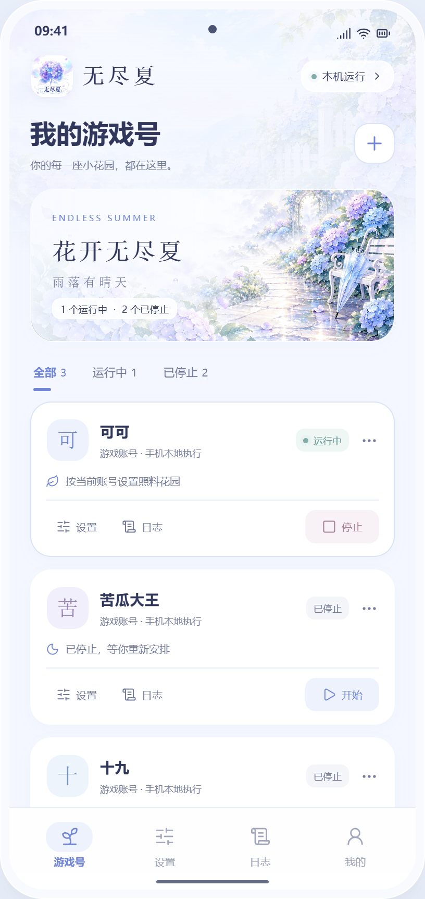
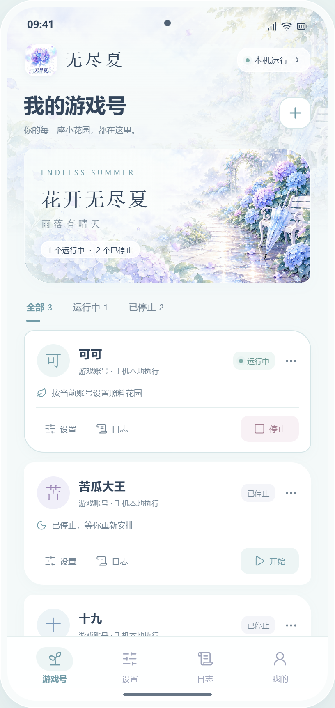
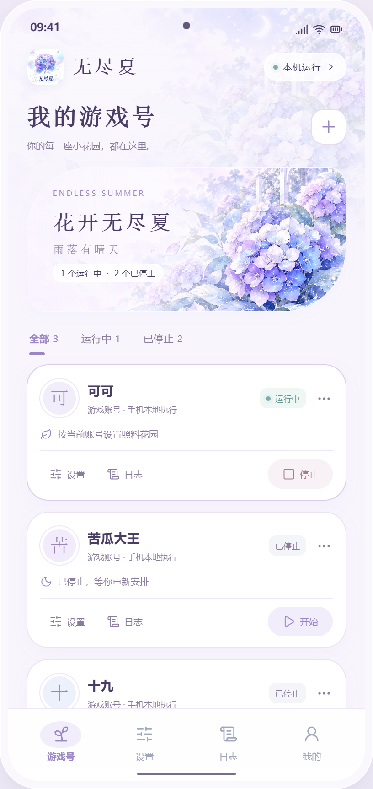

方案 01
晴空花屿
晨光花园 · 透白卡片 · 绣球蓝 · 圆润控件

打开 晴空花屿 完整交互 →绣球蓝、透白卡片与带伞花径，明亮通透的花园。
无尽夏 / ENDLESS SUMMER
晨光花园 · 透白卡片 · 绣球蓝 · 圆润控件

打开 晴空花屿 完整交互 →绣球蓝、透白卡片与带伞花径，明亮通透的花园。
雨后花径 · 雨雾蓝 · 花瓣轮廓 · 轻盈留白

打开 雨后花径 完整交互 →雨停后的水滴与花径，安静而有生气。
月色花庭 · 珍珠浅紫 · 花庭弧线 · 柔润表面

打开 月色花庭 完整交互 →浅紫月光、绣球花拱门与细小星露。